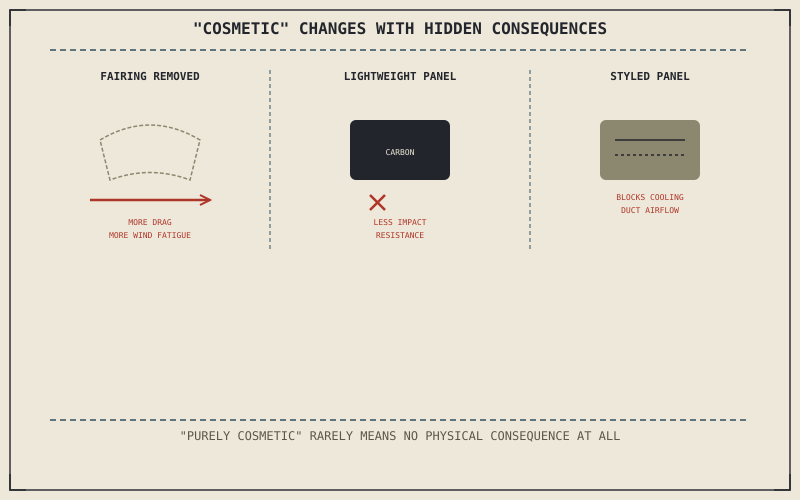

Chapter 13.5 covered modifications where the stakes are reliability and service life. Cosmetic and bodywork changes feel like the opposite — appearance only, with nothing structural or mechanical at risk. That assumption is only partly true, and this chapter is about the specific, real consequences a "purely cosmetic" change can still carry.
Chapter 13.5 closed by pointing here: a category where the stakes shift from reliability back toward appearance alone. This chapter shows that shift isn't quite as complete as it sounds.
Fairings and Aerodynamics: Not Purely Decorative
Chapter 8.7 established that aerodynamic drag grows with the square of speed, and a fairing is one of the few components on a motorcycle whose entire job is managing that force. Removing a fairing for a leaner "streetfighter" look, or fitting a smaller aftermarket one, genuinely increases the drag a rider fights at highway speed — and Chapter 9.10 already connected that same drag directly to physical wind fatigue over a sustained ride. A cosmetic fairing change is also an aerodynamic and fatigue decision, whether or not the rider making it thought of it that way.
Paint and Finish: A Genuine Trade Between Weight and Durability
Chapter 4.2 already framed steel, aluminium, and carbon fibre as a trade in forgiveness rather than simple quality, and aftermarket bodywork panels carry the same trade at a smaller scale. Lightweight carbon or fiberglass replacement panels shed real weight compared to the stock ABS plastic they replace, but typically at the cost of impact resistance — a low-speed tip-over that would flex and survive on a stock panel can crack a stiffer, lighter aftermarket one outright.
A fairing change is also a drag and fatigue decision; a lightweight replacement panel is also a durability decision — "purely cosmetic" rarely means a change has no physical consequence at all, just that the consequence isn't the one being advertised.

A diagram showing three cosmetic modifications and their hidden physical consequences: a removed fairing increasing drag and wind fatigue, a lightweight replacement panel trading impact resistance for weight, and aftermarket bodywork blocking a factory cooling duct.
Cosmetic Changes That Aren't Actually Cosmetic
Some bodywork doubles as ducting, channeling air toward the radiator or oil cooler Chapter 2.15's cooling system depends on, and an aftermarket panel styled to look similar can quietly omit that function while looking nearly identical from a glance. A change made entirely for appearance can restrict the airflow that same cooling system was engineered around, producing a genuine mechanical consequence from a decision that never intended to touch anything mechanical at all.
A Common Misconception, Cleared Up Early
It's a common assumption that "purely cosmetic" is synonymous with "purely inconsequential" — that a change made for identity, in Chapter 13.1's sense, can't also carry a real physical cost. This chapter has now shown three ways that assumption breaks down: drag and fatigue from a fairing change, durability from a lighter panel, and airflow from bodywork that turns out to double as ducting. None of this makes an identity-driven modification illegitimate; it just means the consequence should be named honestly rather than assumed away.
Where This Leads
Chapter 13.7 turns to a different kind of consequence next: when a modification, cosmetic or otherwise, voids a warranty or crosses into breaking the law.
Key Concepts to Remember
- A fairing change alters aerodynamic drag and the wind fatigue a rider actually experiences, not just appearance.
- Lightweight aftermarket panels trade weight savings for impact resistance compared to stock plastic bodywork.
- Some bodywork doubles as cooling ducting, and a cosmetic replacement can unintentionally restrict the airflow the cooling system was built around.
Cross-References
| ← Ch. 8.7 | Established aerodynamic drag scaling with the square of speed; this chapter treats a fairing change as directly altering that drag. |
| ← Ch. 9.10 | Established wind fatigue as a direct consequence of aerodynamic drag; this chapter connects a fairing change to that same fatigue. |
| ← Ch. 4.2 | Framed frame materials as a trade in forgiveness; this chapter applies the same weight-versus-durability trade to aftermarket bodywork panels. |
| → Ch. 13.7 | Covers when a modification voids a warranty or breaks the law. |